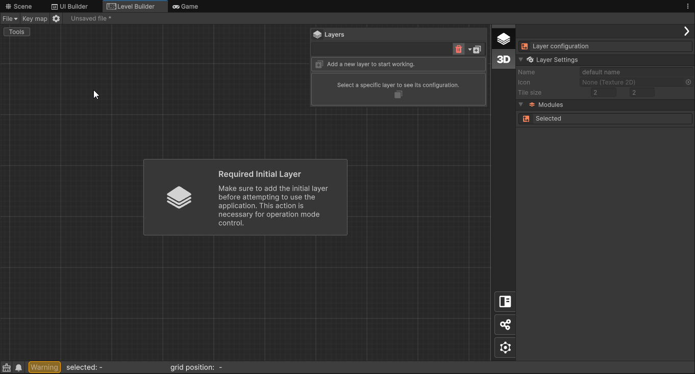
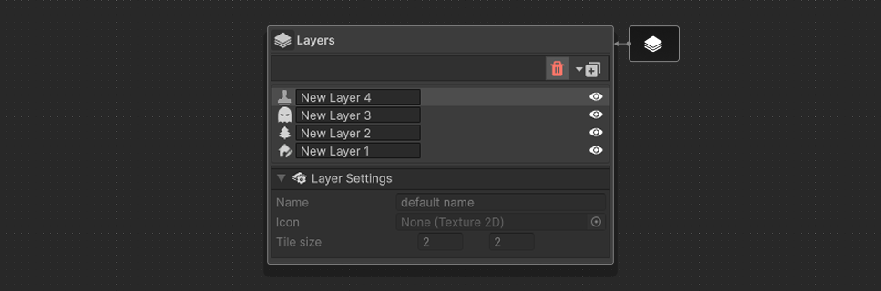
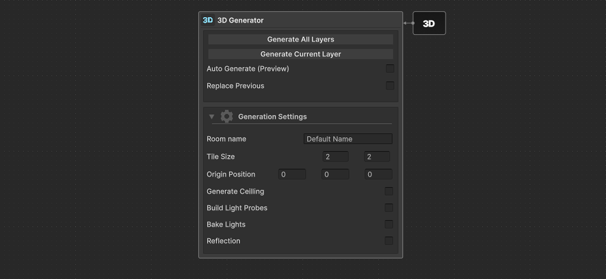
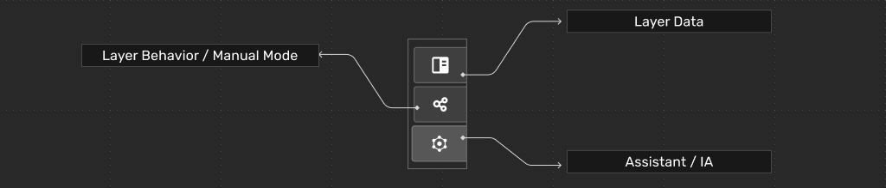

Getting Started
To start working, select the ISILab window in Window>ISILab>LevelBuildingSidekick, this will open the main window of the tool with which you can start working. Next, we will provide a series of general descriptions that you can follow to manage the tool:
Main Window

In the main window, you will find a large working area visualized with a tiling of squares, in this area you can place, move, and remove elements to shape your levels. To the right of this, you will find an internal inspector that will allow you to work with the specific values of the elements to be modified, their base behaviors, and the assistants that will help you work with this tool.
In addition to this, we can find 2 general buttons in the top of the vertical bar between these two aforementioned elements , which will allow showing and hiding 2 main panels to organize the work. The first corresponds to a panel to organize the content of the level by layers, the second corresponds to the panel that will allow us to pass these layers to structures directly usable in unity.
Layers Window

The layers panel can be displayed by toggle the Layers button in the side panel, you can press it again to hide the panel.
The layers that are created are displayed here. For each type of layer you will have different working tools, and the inspector view will change as well.
There are currently 3 types of layers:
- Map generation layer. See Module-1A (Interior space design) or Module-1B (Exterior space design)
- Entities population layer. See Module-2
- Quest design layer.
3D Generation

The 3D generator panel can be displayed by toggle the 3D button in the side panel, you can press it again to hide the panel.
Features
When generating you can choose to build a single layer (the current selected one) or all the layers in the current project. The generator can be tweak with some configuration option:
- Replace Previous: Allows replace of same name layer(s).
- Tile Size: override the default tile size of the set.
Features for Interior space design (step 1A)
- Generate Ceiling: Close the room and use the
Ceilingbundle. - Build Light Probe: Generate light probes inside each room, allow easy dynamic lighting.
- Bake Lights: Automatically bake light for high quality static lighting.
- Build Reflections: Generate a
ReflectionProbeObject in the center of each room.
LBS Inspector Panel

From the bottom-left side panel you can access to a variety of layer specific sections:
- Layer data: The information of the selected object in the workspace is displayed.
- Layer Behavior / Manual Mode: You can access brushes and other options for working manually in the workspace.
- Assistants / AI: Here you will find AI assistance with different options and features depending on the layer's type.
Old documentation (Spanish)
For a detailed documentation of the LBS we have created a manual for an older version 0.2.0 or earlier. We will soon publish a new and updated manual.